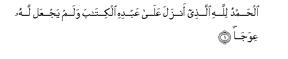
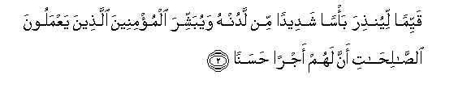
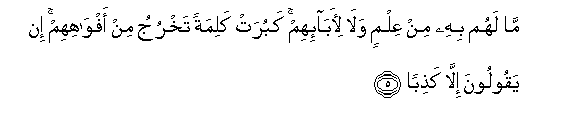
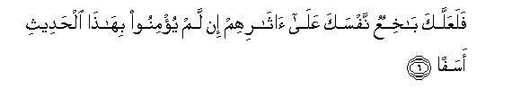
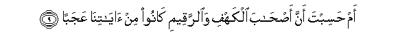
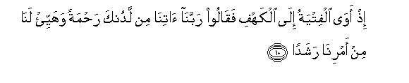
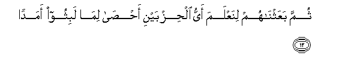

Sacred Texts Islam Index
Hypertext Qur'an Unicode Palmer Pickthall Yusuf Ali English Rodwell
Sūra XVIII.: Kahf, or the Cave. Index
Previous Next

The Holy Quran, tr. by Yusuf Ali, [1934], at sacred-texts.com
Sūra XVIII.: Kahf, or the Cave.
Section 1

1. Alhamdu lillahi allathee anzala AAala AAabdihi alkitaba walam yajAAal lahu AAiwajan
1. Praise be to God,
Who hath sent to His Servant
The Book, and hath allowed
Therein no Crookedness:

2. Qayyiman liyunthira ba/san shadeedan min ladunhu wayubashshira almu/mineena allatheena yaAAmaloona alssalihati anna lahum ajran hasanan
2. (He hath made it) Straight
(And Clear) in order that
He may warn (the godless)
Of a terrible Punishment
From Him, and that He
May give Glad Tidings
To the Believers who work
Righteous deeds, that they
Shall have a goodly Reward,
3. Wherein they shall
Remain for ever:
4. Wayunthira allatheena qaloo ittakhatha Allahu waladan
4. Further; that He may warn
Those (also) who say,
"God hath begotten a son"

5. Ma lahum bihi min AAilmin wala li-aba-ihim kaburat kalimatan takhruju min afwahihim in yaqooloona illa kathiban
5. No knowledge have they
Of such a thing, nor
Had their fathers. It is
A grievous thing that issues
From their mouths as a saying.
What they say is nothing
But falsehood!

6. FalaAAallaka bakhiAAun nafsaka AAala atharihim in lam yu/minoo bihatha alhadeethi asafan
6. Thou wouldst only, perchance,
Fret thyself to death,
Following after them, in grief,
If they believe not
In this Message.
7. Inna jaAAalna ma AAala al-ardi zeenatan laha linabluwahum ayyuhum ahsanu AAamalan
7. That which is on earth
We have made but as
A glittering show for the earth,
In order that We may test
Them—as to which of them
Are best in conduct.
8. Wa-inna lajaAAiloona ma AAalayha saAAeedan juruzan
8. Verily what is on earth
We shall make but as
Dust and dry soil
(Without growth or herbage).

9. Am hasibta anna as-haba alkahfi waalrraqeemi kanoo min ayatina AAajaban
9. Or dost thou reflect
That the Companions of the Cave
And of the Inscription
Were wonders among Our Signs?

10. Ith awa alfityatu ila alkahfi faqaloo rabbana atina min ladunka rahmatan wahayyi/ lana min amrina rashadan
10. Behold, the youths betook themselves
To the Cave: they said,
"Our Lord! bestow on us
Mercy from Thyself,
And dispose of our affair
For us in the right way!"
11. Fadarabna AAala athanihim fee alkahfi sineena AAadadan
11. Then We draw (a veil)
Over their ears, for a number
Of years, in the Cave,
(So that they heard not):

12. Thumma baAAathnahum linaAAlama ayyu alhizbayni ahsa lima labithoo amadan
12. Then We roused them,
In order to test which
Of the two parties was best
At calculating the term
Of years they had tarried!